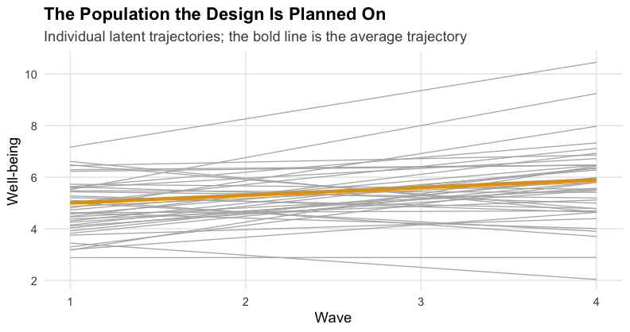

Composite Sample Size Planning for SEM: A Simple Model and a Latent Growth Curve
Ken Kelley
August 2026
Source:vignettes/composite_sem_planning.Rmd
composite_sem_planning.Rmd
# Produced by tools/composite_sem_reference.R, which runs each of the eight
# calls in this vignette at G = 10000. Carried as literals because that sweep
# takes about an hour and cannot run while the document is being knitted.
ref <- list(
med_at_100 = c(composite_power = 0.8692, power_a = 0.9883,
power_b = 0.9367, power_ab = 0.8692),
med_plan = c(necessary_N = 88, composite_power = 0.8052,
power_a = 0.9762, power_b = 0.9067, power_ab = 0.8052),
med_plan_cp = c(necessary_N = 343, composite_power = 0.8143,
power_a = 1.0000, power_b = 1.0000, power_cp = 0.8143,
power_ab = 1.0000),
med_aipe = c(necessary_N = 238, composite_assurance = 0.3816,
mean_width_a = 0.2330, mean_width_b = 0.2499,
mean_width_ab = 0.1301),
med_aipe_80 = c(necessary_N = 268, composite_assurance = 0.8082,
mean_width_a = 0.2196, mean_width_b = 0.2355,
mean_width_ab = 0.1224),
lgm_at_150 = c(composite_power = 0.6700, power_mu_s = 1.0000,
power_cov_is = 0.6700),
lgm_plan = c(necessary_N = 201, composite_power = 0.8008,
power_mu_s = 1.0000, power_cov_is = 0.8008),
lgm_aipe = c(necessary_N = 220, composite_assurance = 0.8197,
width_within_desired_mu_s = 0.8197,
width_within_desired_cov_is = 0.9956)
)The sample sizes these calls print are not planning values. Every call below uses
G = 25Monte Carlo replications so the document knits in about twenty seconds. At that many replications a reported proportion carries a simulation standard error near 0.10, and the necessary inherits it.So that a reader can see both the method and the answer, every result is reported beside the same call at
G = 10000, which is the column to read. The gap is not small: the first plan below needs at 10,000 replications, andG = 25misses it. Those reference values were produced bytools/composite_sem_reference.R, which runs the identical calls atG = 10000and takes about an hour; the script is in the maintained repository and is not shipped with the package. A plan you intend to defend is worthG = 1000or more, which is what everyGargument in this document should become before its answer is used.
Most studies that fit a structural equation model state more than one hypothesis, and the paper’s conclusion holds only when all of them do. A study can have adequate statistical power for each hypothesis on its own and still be underpowered for the conjunction, because the probability that every test succeeds in the same study is smaller, often much smaller, than any single test’s power (Maxwell, 2004). The same logic applies to accuracy: a design is only as informative as its widest confidence interval of interest. Sample size planning should therefore be done for the set of parameters a study’s conclusion rests on, not for one parameter at a time.
DMAR implements this with two functions, both driven by a priori Monte Carlo simulation (Muthén & Muthén, 2002; Maxwell, Kelley, & Rausch, 2008):
-
ss_power_composite_sem()finds the smallest at which every parameter of interest is statistically significant in the same study with a desired probability (the composite power), or reports that probability at a given ; -
ss_aipe_composite_sem()finds the smallest at which every confidence interval of interest is sufficiently narrow, in expectation or with a stated assurance for the joint event, the accuracy in parameter estimation (AIPE) goal.
This vignette works through the same workflow twice: first for a simple model with observed variables, then for a latent growth curve model, where the parameters of interest include a latent mean. Both functions require to be installed.
The Workflow
Every plan is built from two model statements.
-
A population model, written in lavaan syntax with
every parameter fixed to the value the researcher posits (from
theory, prior studies, or pilot data; these are population values, never
sample estimates).
cov_sem()turns it into the population covariance matrix, and, when the model has a mean structure, the population mean vector. -
The analysis model, the free model that would be
fit to the data, with a label on each parameter of interest.
The labeled set is the composite. Labels can also name quantities
defined with
:=, such as an indirect effect.
For a candidate
,
the planner draws G samples of size
from the population, fits the analysis model to each, and records each
labeled parameter’s test and confidence interval. Because the estimates
come from one fitted model per sample, their dependence is reflected
exactly; nothing is assumed about how the tests relate. A search over
,
seeded by an analytic Wald approximation, then brackets and bisects to
the smallest sample size meeting the goals.
A Simple Model: Mediation Among Observed Variables
Suppose a training program (x) is thought to improve job
performance (y) by building self-efficacy (m):
the classic mediation structure with paths
(from x to m),
(from m to y holding x constant),
the direct path
,
and the indirect effect
.
The claims the paper will make are that training builds self-efficacy,
that self-efficacy carries into performance, and that the indirect
effect is nonzero. Those three claims name the set:
,
,
and
.
The Population
The residual variances below are chosen so every variable has unit variance, so the paths read as standardized effects: , , , and therefore .
pop_med <- "
x ~~ 1*x
m ~ 0.4*x
m ~~ 0.84*m
y ~ 0.35*m + 0.15*x
y ~~ 0.813*y
"
cov_sem(pop_med)$sigma_theta
#> m y x
#> m 1.00 0.41 0.40
#> y 0.41 1.00 0.29
#> x 0.40 0.29 1.00The Analysis Model and the Parameters of Interest
The analysis model is free; the labels name the parameters of
interest, and ab := a*b defines the indirect effect (its
standard error comes from the delta method, as in lavaan itself).
med_model <- "
m ~ a*x
y ~ b*m + cp*x
ab := a*b
"Composite Power at a Candidate Sample Size
Suppose
is under consideration. parameters selects the labeled set;
G is the number of Monte Carlo replications, kept at 25
here so the document knits quickly, and the seed makes the
result reproducible. As the note at the top says, a plan you intend to
defend is worth G = 1000 or more.
med_at_100 <- ss_power_composite_sem(
model = med_model, pop_model = pop_med,
parameters = c("a", "b", "ab"),
N = 100, G = 25, seed = 113)
med_at_100| term | value |
|---|---|
| specified_N | 100 |
| composite_power | 0.84 |
| composite_power_mc_se | 0.0733 |
| power_a | 0.96 |
| power_b | 0.96 |
| power_ab | 0.84 |
| population_a | 0.4 |
| population_b | 0.35 |
| population_ab | 0.14 |
| alpha_level | 0.05 |
| replications | 25 |
| converged_replications | 25 |
compare(med_at_100, ref$med_at_100,
c("composite_power", "power_a", "power_b", "power_ab"))
#> G = 25 G = 10000
#> composite_power 0.84 0.8692
#> power_a 0.96 0.9883
#> power_b 0.96 0.9367
#> power_ab 0.84 0.8692The power_a, power_b, and
power_ab rows are the marginal powers, each the proportion
of the G replications in which that parameter was
significant. The composite_power row is the proportion in
which all three were significant in the same replication: here
0.84, at most the smallest marginal power, and estimated with a
simulation standard error of about 0.073. Because the three tests share
one fitted model they are dependent, so the composite need not equal the
product of the marginals; the simulation gets the joint probability
right without any independence assumption.
The Necessary Sample Size
Planning replaces N with desired_power:
med_plan <- ss_power_composite_sem(
model = med_model, pop_model = pop_med,
parameters = c("a", "b", "ab"),
desired_power = 0.80, G = 25, seed = 113)
med_plan| term | value |
|---|---|
| necessary_N | 76 |
| composite_power | 0.8 |
| composite_power_mc_se | 0.08 |
| power_a | 1 |
| power_b | 0.96 |
| power_ab | 0.8 |
| population_a | 0.4 |
| population_b | 0.35 |
| population_ab | 0.14 |
| alpha_level | 0.05 |
| replications | 25 |
| converged_replications | 25 |
| desired_power | 0.8 |
compare(med_plan, ref$med_plan,
c("necessary_N", "composite_power", "power_a", "power_b", "power_ab"))
#> G = 25 G = 10000
#> necessary_N 76.00 88.0000
#> composite_power 0.80 0.8052
#> power_a 1.00 0.9762
#> power_b 0.96 0.9067
#> power_ab 0.80 0.8052A sample of
is the smallest at which the estimated composite power reaches 0.80,
reading the reference column. The result carries the same broom summary
as the rest of the ss_power_* family:
generics::tidy(med_plan)
#> term estimate power
#> 1 sample_size 76 0.8The Weakest Parameter Governs the Design
The direct path was deliberately left out of the set above. Adding it shows why the choice of the set is a substantive decision, not a formality:
med_plan_cp <- ss_power_composite_sem(
model = med_model, pop_model = pop_med,
parameters = c("a", "b", "cp", "ab"),
desired_power = 0.80, G = 25, seed = 113)
med_plan_cp| term | value |
|---|---|
| necessary_N | 353 |
| composite_power | 0.84 |
| composite_power_mc_se | 0.0733 |
| power_a | 1 |
| power_b | 1 |
| power_cp | 0.84 |
| power_ab | 1 |
| population_a | 0.4 |
| population_b | 0.35 |
| population_cp | 0.15 |
| population_ab | 0.14 |
| alpha_level | 0.05 |
| replications | 25 |
| converged_replications | 25 |
| desired_power | 0.8 |
compare(med_plan_cp, ref$med_plan_cp,
c("necessary_N", "composite_power", "power_cp"))
#> G = 25 G = 10000
#> necessary_N 353.00 343.0000
#> composite_power 0.84 0.8143
#> power_cp 0.84 0.8143Requiring the small direct path to be significant as well moves the necessary sample size from to . The composite is bounded by its weakest member, so the set should contain exactly the parameters the paper’s conclusion requires, and each addition is a design commitment with a visible price.
Accuracy for the Set: AIPE
When the research questions concern magnitudes, the goal is a
sufficiently narrow confidence interval for every parameter of interest.
desired_width states the full width per parameter, as a
named vector so a width can never silently attach to the wrong
parameter; the indirect effect, on its smaller scale, is held to a
narrower interval here.
med_aipe <- ss_aipe_composite_sem(
model = med_model, pop_model = pop_med,
parameters = c("a", "b", "ab"),
desired_width = c(a = 0.25, b = 0.25, ab = 0.15),
G = 25, seed = 113)
med_aipe| term | value |
|---|---|
| necessary_N | 245 |
| composite_assurance | 0.52 |
| mean_width_a | 0.227 |
| mean_width_b | 0.249 |
| mean_width_ab | 0.125 |
| width_within_desired_a | 0.92 |
| width_within_desired_b | 0.56 |
| width_within_desired_ab | 0.96 |
| desired_width_a | 0.25 |
| desired_width_b | 0.25 |
| desired_width_ab | 0.15 |
| population_a | 0.4 |
| population_b | 0.35 |
| population_ab | 0.14 |
| conf_level | 0.95 |
| replications | 25 |
| converged_replications | 25 |
Confidence level: 95%
compare(med_aipe, ref$med_aipe,
c("necessary_N", "composite_assurance", "mean_width_a",
"mean_width_b", "mean_width_ab"))
#> G = 25 G = 10000
#> necessary_N 245.0000 238.0000
#> composite_assurance 0.5200 0.3816
#> mean_width_a 0.2271 0.2330
#> mean_width_b 0.2495 0.2499
#> mean_width_ab 0.1254 0.1301With no assurance, the criterion is the expected width:
the returned
is the smallest at which the mean simulated width of every
interval is within its target. Widths vary from sample to sample, so a
study of that size obtains all three sufficiently narrow intervals in
only about 38 percent of its realizations (the
composite_assurance row). Supplying an assurance plans
against that joint event directly:
med_aipe_80 <- ss_aipe_composite_sem(
model = med_model, pop_model = pop_med,
parameters = c("a", "b", "ab"),
desired_width = c(a = 0.25, b = 0.25, ab = 0.15),
assurance = 0.80, G = 25, seed = 113)
med_aipe_80| term | value |
|---|---|
| necessary_N | 262 |
| composite_assurance | 0.92 |
| mean_width_a | 0.222 |
| mean_width_b | 0.229 |
| mean_width_ab | 0.118 |
| width_within_desired_a | 1 |
| width_within_desired_b | 0.92 |
| width_within_desired_ab | 1 |
| desired_width_a | 0.25 |
| desired_width_b | 0.25 |
| desired_width_ab | 0.15 |
| population_a | 0.4 |
| population_b | 0.35 |
| population_ab | 0.14 |
| conf_level | 0.95 |
| replications | 25 |
| converged_replications | 25 |
| assurance | 0.8 |
Confidence level: 95%
compare(med_aipe_80, ref$med_aipe_80,
c("necessary_N", "composite_assurance"))
#> G = 25 G = 10000
#> necessary_N 262.00 268.0000
#> composite_assurance 0.92 0.8082A planning summary an author could report: with , all three intervals are simultaneously no wider than their targets (0.25, 0.25, and 0.15) in an estimated 92 percent of studies, under the stated population model and a 95% confidence level.
A Latent Growth Curve
Now a longitudinal design: well-being measured at four annual waves,
with individual change modeled by a linear latent growth curve. The
intercept factor i is a person’s status at wave 1; the
slope factor s is the person’s annual change. Two questions
drive the study, and both must hold for the paper’s argument:
- Is there average growth? The mean of the slope factor, .
- Do people who start higher grow less? The intercept-slope covariance, .
The first is a question about a latent mean, which is why the planners accept a population mean structure alongside the covariance structure.
The Population Growth Process
The posited population: average status 5 at wave 1, average growth 0.3 per year, intercept variance 1, slope variance 0.2, intercept-slope covariance (a correlation of about : those who start higher grow less), and residual variance 0.5 at every wave. Every parameter, including every intercept and latent mean, is fixed.
pop_lgm <- "
i =~ 1*t1 + 1*t2 + 1*t3 + 1*t4
s =~ 0*t1 + 1*t2 + 2*t3 + 3*t4
i ~~ 1*i
s ~~ 0.2*s
i ~~ -0.15*s
t1 ~~ 0.5*t1; t2 ~~ 0.5*t2; t3 ~~ 0.5*t3; t4 ~~ 0.5*t4
t1 ~ 0*1; t2 ~ 0*1; t3 ~ 0*1; t4 ~ 0*1
i ~ 5*1
s ~ 0.3*1
"
lgm_pop <- cov_sem(pop_lgm)
lgm_pop$mu_theta
#> t1 t2 t3 t4
#> 5.0 5.3 5.6 5.9
lgm_pop$sigma_theta
#> t1 t2 t3 t4
#> t1 1.50 0.85 0.70 0.55
#> t2 0.85 1.40 0.95 1.00
#> t3 0.70 0.95 1.70 1.45
#> t4 0.55 1.00 1.45 2.40cov_sem() returns both moments the population implies:
the wave means rise by 0.3 per year, and the wave variances and
covariances follow from the growth factor variances, their covariance,
and the residuals.
The population is worth seeing. Each light line below is one person’s model implied trajectory, drawn from the population distribution of ; the bold line is the average trajectory.
set.seed(113)
growth_factors <- MASS::mvrnorm(
n = 40, mu = c(5, 0.3),
Sigma = matrix(c(1, -0.15, -0.15, 0.2), 2, 2))
traj <- data.frame(
person = rep(seq_len(40), each = 4),
wave = rep(1:4, times = 40),
wellbeing = growth_factors[rep(seq_len(40), each = 4), 1] +
growth_factors[rep(seq_len(40), each = 4), 2] * rep(0:3, times = 40))
ggplot(traj, aes(wave, wellbeing, group = person)) +
geom_line(color = "grey70", linewidth = 0.4) +
geom_line(data = data.frame(person = 0, wave = 1:4,
wellbeing = 5 + 0.3 * 0:3),
color = unname(grDevices::palette.colors(2)[2]),
linewidth = 1.4) +
labs(title = "The Population the Design Is Planned On",
subtitle = "Individual latent trajectories; the bold line is the average trajectory",
x = "Wave", y = "Well-being")
plot of chunk lgm-trajectories
The negative intercept-slope covariance is visible: trajectories that start high tend to tilt down relative to the average, so the fan narrows over time.
The Analysis Model
The analysis model is the same growth structure with its parameters
free. Written for lavaan::sem(), the growth
parameterization fixes the observed intercepts to zero and frees the
latent means (this is exactly what lavaan::growth() does
internally). The two parameters of interest carry labels.
lgm_model <- "
i =~ 1*t1 + 1*t2 + 1*t3 + 1*t4
s =~ 0*t1 + 1*t2 + 2*t3 + 3*t4
i ~~ cov_is*s
t1 ~ 0*1; t2 ~ 0*1; t3 ~ 0*1; t4 ~ 0*1
i ~ 1
s ~ mu_s*1
"Composite Power for the Growth Questions
First, what does a candidate deliver?
lgm_at_150 <- ss_power_composite_sem(
model = lgm_model, pop_model = pop_lgm,
parameters = c("mu_s", "cov_is"),
N = 150, G = 25, seed = 113)
lgm_at_150| term | value |
|---|---|
| specified_N | 150 |
| composite_power | 0.64 |
| composite_power_mc_se | 0.096 |
| power_mu_s | 1 |
| power_cov_is | 0.64 |
| population_mu_s | 0.3 |
| population_cov_is | -0.15 |
| alpha_level | 0.05 |
| replications | 25 |
| converged_replications | 25 |
compare(lgm_at_150, ref$lgm_at_150,
c("composite_power", "power_mu_s", "power_cov_is"))
#> G = 25 G = 10000
#> composite_power 0.64 0.67
#> power_mu_s 1.00 1.00
#> power_cov_is 0.64 0.67The average growth of 0.3 per year is easy to detect
(power_mu_s is 1), and the composite is governed almost
entirely by the covariance question: power_cov_is is 0.64,
and the composite power is 0.64. Planning for the pair:
lgm_plan <- ss_power_composite_sem(
model = lgm_model, pop_model = pop_lgm,
parameters = c("mu_s", "cov_is"),
desired_power = 0.80, G = 25, seed = 113)
lgm_plan| term | value |
|---|---|
| necessary_N | 216 |
| composite_power | 0.88 |
| composite_power_mc_se | 0.065 |
| power_mu_s | 1 |
| power_cov_is | 0.88 |
| population_mu_s | 0.3 |
| population_cov_is | -0.15 |
| alpha_level | 0.05 |
| replications | 25 |
| converged_replications | 25 |
| desired_power | 0.8 |
compare(lgm_plan, ref$lgm_plan,
c("necessary_N", "composite_power", "power_cov_is"))
#> G = 25 G = 10000
#> necessary_N 216.00 201.0000
#> composite_power 0.88 0.8008
#> power_cov_is 0.88 0.8008About participants are needed for both growth questions to be answered affirmatively in the same study with probability 0.80, under the stated population. A researcher who planned only for the slope mean, the headline effect, would have chosen a far smaller study and then usually failed to detect the covariance that the theory also requires.
Accuracy for the Growth Parameters
The magnitude of growth and of its dependence on initial status are usually the quantities of substantive interest, so the AIPE plan holds the slope mean to an interval no wider than 0.15 (that is, around an effect of 0.3 per year) and the covariance to 0.25, jointly, in 80 percent of studies:
lgm_aipe <- ss_aipe_composite_sem(
model = lgm_model, pop_model = pop_lgm,
parameters = c("mu_s", "cov_is"),
desired_width = c(mu_s = 0.15, cov_is = 0.25),
assurance = 0.80, G = 25, seed = 113)
lgm_aipe| term | value |
|---|---|
| necessary_N | 220 |
| composite_assurance | 0.92 |
| mean_width_mu_s | 0.142 |
| mean_width_cov_is | 0.205 |
| width_within_desired_mu_s | 0.92 |
| width_within_desired_cov_is | 1 |
| desired_width_mu_s | 0.15 |
| desired_width_cov_is | 0.25 |
| population_mu_s | 0.3 |
| population_cov_is | -0.15 |
| conf_level | 0.95 |
| replications | 25 |
| converged_replications | 25 |
| assurance | 0.8 |
Confidence level: 95%
compare(lgm_aipe, ref$lgm_aipe,
c("necessary_N", "composite_assurance",
"width_within_desired_mu_s", "width_within_desired_cov_is"))
#> G = 25 G = 10000
#> necessary_N 220.00 220.0000
#> composite_assurance 0.92 0.8197
#> width_within_desired_mu_s 0.92 0.8197
#> width_within_desired_cov_is 1.00 0.9956The accuracy goal needs
,
and the width_within_desired_* rows show which target
binds: the slope mean’s interval is the harder one to keep narrow at
this
.
When both existence and magnitude matter, the defensible design uses the
larger of the power and AIPE sample sizes, here
.
Practical Notes
-
Monte Carlo precision. Every power and proportion
reported is an estimate from
Greplications with simulation standard error about , and the necessary inherits that uncertainty. The smallGused here keeps the vignette quick; real plans deserveG = 1000or more, and reporting theseedmakes a plan reproducible. - Sensitivity to the population values. The plan is conditional on the posited population, exactly as in any sample size planning. Because the planner is itself a Monte Carlo study, sensitivity analysis is direct: rerun it with the alternative population values under consideration (a smaller slope mean, a weaker covariance) and compare the plans.
- Convergence. Replications that fail to converge are redrawn and the summaries condition on convergence; frequent nonconvergence at small is itself design information, and the planners say so when it happens.
- Variance parameters. Any labeled parameter can join the set, including a variance such as the slope variance. Its Wald test is reported like any other, but a variance near its boundary of zero is a case the two-sided Wald test treats roughly; interpret such a target with care.
References
Lai, K., & Kelley, K. (2011). Accuracy in parameter estimation for targeted effects in structural equation modeling: Sample size planning for narrow confidence intervals. Psychological Methods, 16(2), 127–148.
Maxwell, S. E. (2004). The persistence of underpowered studies in psychological research: Causes, consequences, and remedies. Psychological Methods, 9(2), 147–163.
Maxwell, S. E., Delaney, H. D., & Kelley, K. (2027). Designing experiments and analyzing data: A model comparison perspective (4th ed.). Routledge.
Maxwell, S. E., Kelley, K., & Rausch, J. R. (2008). Sample size planning for statistical power and accuracy in parameter estimation. Annual Review of Psychology, 59, 537–563.
Muthén, L. K., & Muthén, B. O. (2002). How to use a Monte Carlo study to decide on sample size and determine power. Structural Equation Modeling, 9(4), 599–620.
Rosseel, Y. (2012). lavaan: An R package for structural equation modeling. Journal of Statistical Software, 48(2), 1–36.